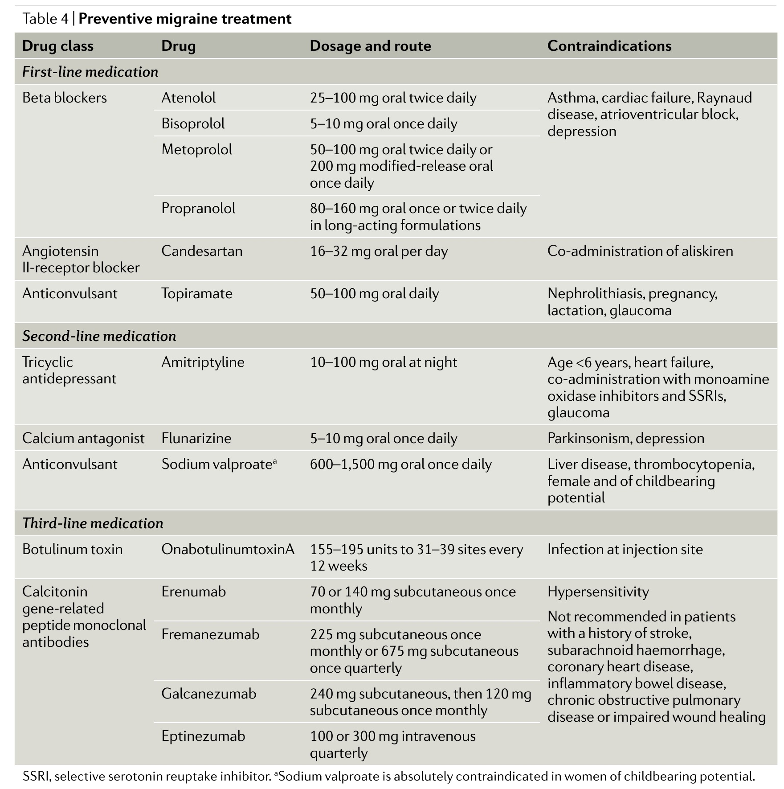

Q1. Enxaqueca + obesidade. Profilático que a banca mais quer entre os da fonte:
Achado + pegadinha
A banca escolhe pela comorbidade
Obeso + enxaqueca → topiramato. Matching comorbidade × droga é a vista-mestra de prova.
Classes orais
Profiláticos: betabloqueadores (propranolol); anticonvulsivantes (topiramato, valproato); antidepressivos (amitriptilina tricíclico; venlafaxina dual).
mAb / fremanezumab
Antagonistas do CGRP também na profilaxia; oral: rimegepant. Fremanezumab: anticorpo monoclonal anti-CGRP SC — mensal ou, com dose maior, trimestral. Vantagem: posologia confortável; desvantagem: custo/disponibilidade.
Prova = orais
Em prova de acesso direto, costumam cair as medicações orais (não mAb/fremanezumab; nem sempre rimegepant).
Tabelão comorbidade
A banca escolhe a melhor droga conforme outra comorbidade:
| Comorbidade | Droga-eixo |
|---|---|
| Enxaqueca + HAS | Betabloqueador (propranolol) |
| Enxaqueca + depressão | Venlafaxina (ou antidepressivo adequado) |
| Enxaqueca + epilepsia | Topiramato (valproato também nas refs) |
| Enxaqueca + sobrepeso/obesidade | Topiramato |
Topiramato-peso
Entre as citadas, a única que reduz peso é o topiramato — associação que mais cai.
A banca escolhe pela comorbidade / obeso + enxaqueca → topiramato.

Eigenbrodt AK et al. Nat Rev Neurol. 2021;17(8):501–514 — CC BY 4.0 · DOI 10.1038/s41582-021-00509-5 · fonte
Arsenal preventivo de acesso direto
A tabela de Eigenbrodt 2021 lista preventivos orais e o terceiro nível com mAbs anti-CGRP. A escolha clínica cruza comorbidade — não é ranking por popularidade.
Quiz
Q2. Enxaqueca + HAS. Melhor matching: